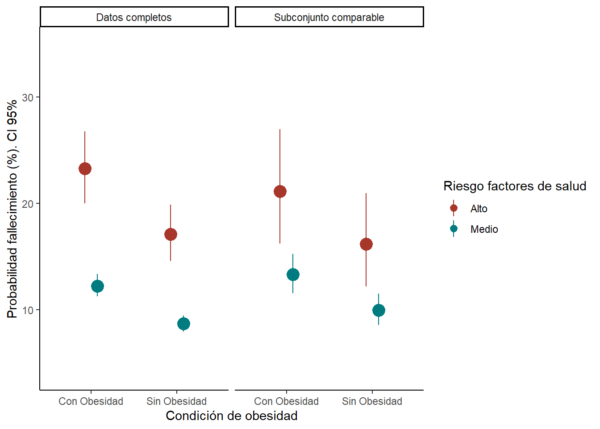
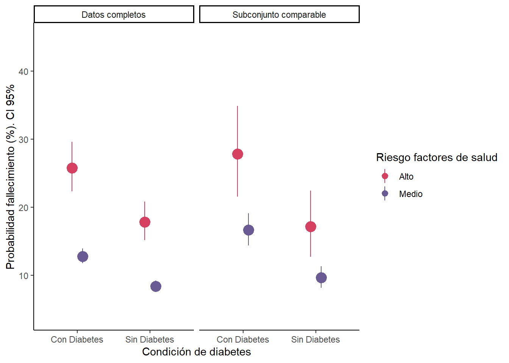
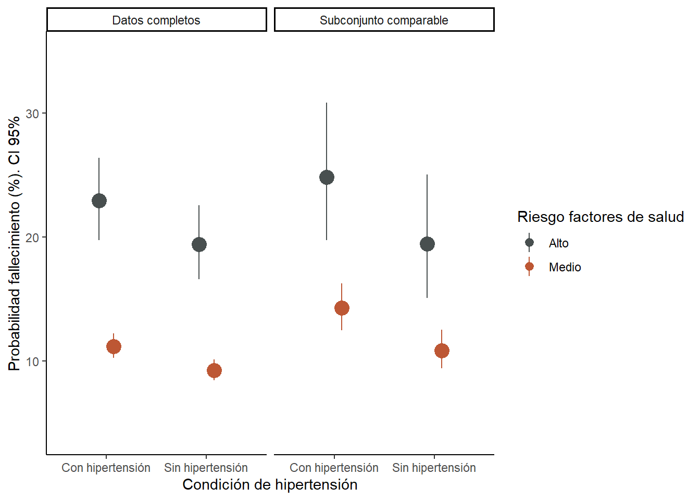

Las prevalencias ajustadas se obtuvieron de un modelo bayesiano jerárquico robusto que regularmente da mejores resultados que los modelos comunes de máxima verosimilitud. Sin embargo, la naturaleza de los datos utilizados (i.e. la población en la muestra puede desviarse bastante de los valores que se tuvieran si existiera información perfecta) puede afectar la precisión de la estimación y sesgar las cifras reportadas. Con el fin de garantizar un mínimo de robustez de los resultados presentados, se hicieron análisis cuasi-experimentales (Comparar a dos grupos equivalentes) para tratar de reducir el efecto del modelo y la estructura de datos sobre los resultados.
Estos análisis se hicieron con el paquete MatchIt() de R. Los análisis se hicieron para tres factores decisivos en el riesgo de fallecimiento de COVID-19: Obesidad, diabetes e hipertensión. El proceso consistió en estimar tres modelos cuasi-experimentales (análisis de vecinos más cercanos) para obtener un suubconjunto de datos de grupos cuasi-equivalentes. Después se calcularon efectos marginales para compararlos con los resultados del modelo bayesiano de prevalencia ajustada. Los resultados muestran que los resultados del modelo bayesiano son altamente confiables.
Para mayor información sobre este tipo de análisis se recomienda leer este texto.


